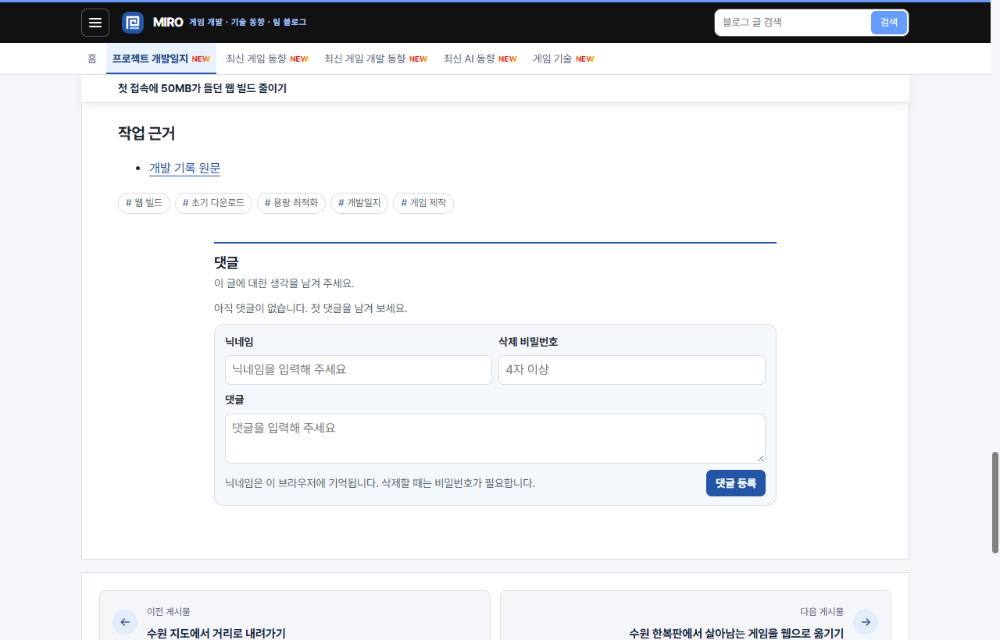
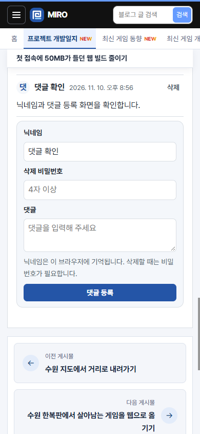
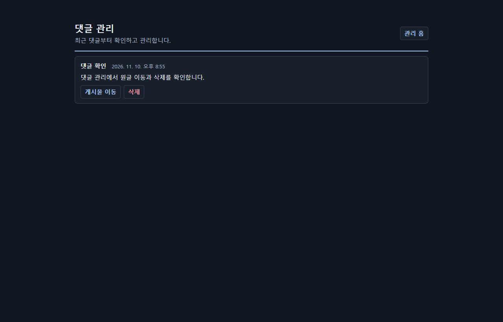
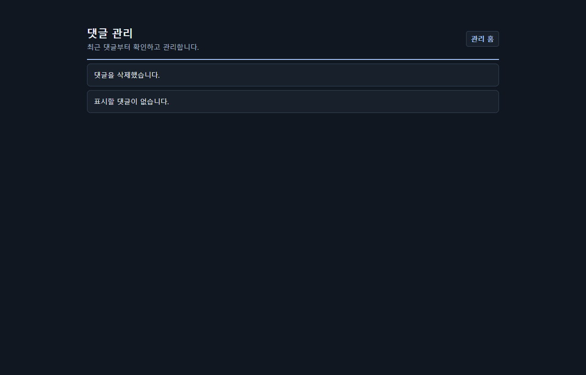

Tracefolio REPORTS & ISSUES
Tracefolio REPORTS & ISSUES댓글 화면 축소와 관리자 댓글 관리 배포
완료4자 삭제 비밀번호를 지원하고 관리자 댓글 목록에 삭제와 원글 이동을 추가했습니다.
작업 결과
공개 게시글의 댓글 폼을 줄이고, 관리 페이지에 댓글 관리 메뉴를 추가했습니다. 운영에서 4자 비밀번호로 작성·삭제를 확인했습니다.
변경 내용
적용 내용
comments/style.css와comments/template.mjs에서 댓글 영역 최대 폭을 720px로 제한하고 폼의 간격, 입력 높이와 본문 행 수를 줄였습니다.- 폼과
functions/api/comments.js의 최소 삭제 비밀번호 길이를 함께 4자로 변경했습니다. 기존 댓글은 작성할 때 정한 비밀번호로 삭제할 수 있습니다. admin/comments.mjs의commentAdministration에서 기존 관리자 인증을 사용해 최신 댓글부터 30개씩 조회합니다. 각 행에서 게시물로 이동하거나 댓글 비밀번호 없이 삭제합니다.- 운영 관리자 Worker의 기존 대시보드 소스는 로컬 운영본을 사용했습니다. 배포 전 공개 운영 HTML과 CSS를 대조했고, Git에는 기존 저장소 관리자 템플릿에 적용한 동일 기능만 포함했습니다.
export async function commentAdministration(request, env, blog) {
const url = new URL(request.url);
const remove = url.pathname.match(/^\/comments\/([1-9]\d{0,15})\/delete$/);
if (!configured(env)) return new Response('관리자 로그인 설정을 확인해 주세요.', {status: 503, headers});
if (!await authorized(request, env)) {
if (request.method === 'GET') return new Response(null, {status: 303, headers: {...headers, location: '/'}});
return new Response(null, {status: 401, headers});
}
if (!env.COMMENTS_DB) return new Response('댓글 저장소를 확인해 주세요.', {status: 503, headers});
const before = url.searchParams.get('before');
if (before !== null && !positiveId(before)) return new Response('잘못된 목록 위치입니다.', {status: 400, headers});
if (request.method === 'POST' && remove && positiveId(remove[1])) {
if (request.headers.get('Origin') !== url.origin) return new Response(null, {status: 403, headers});
const deletion = await env.COMMENTS_DB.prepare('DELETE FROM comments WHERE id = ?').bind(Number(remove[1])).run();
const query = new URLSearchParams();
if (before) query.set('before', before);
if (deletion.meta.changes) query.set('deleted', '1');
const location = '/comments' + (query.size ? '?' + query : '');
return new Response(null, {status: 303, headers: {...headers, location}});
}
if (url.pathname !== '/comments' || request.method !== 'GET') return new Response(null, {status: 405, headers});
const {results} = await env.COMMENTS_DB.prepare(
'SELECT id, post, nickname, body, created_at FROM comments WHERE id < ? ORDER BY id DESC LIMIT ?',
).bind(before ? Number(before) : Number.MAX_SAFE_INTEGER, pageSize + 1).all();
const comments = results.slice(0, pageSize);
const next = results.length > pageSize ? comments.at(-1).id : null;
return new Response(renderPage(comments, next, before, url.searchParams.get('deleted') === '1', blog), {headers});
}
flowchart LR
A["댓글 입력"] --> B{"비밀번호가 4자 이상?"}
B -->|예| C["Pages API에서 검증하고 D1에 등록"]
B -->|아니요| D["길이 오류 표시"]
C --> E["작성자 비밀번호로 삭제 가능"]
flowchart LR
A["관리 메뉴 열기"] --> B{"관리자 세션 유효?"}
B -->|아니요| C["로그인 화면으로 이동"]
B -->|예| D["D1 댓글 목록"]
D --> E["게시글 댓글로 이동"]
D --> F["동일 출처의 삭제 요청"]
F --> G["D1 삭제 및 목록 갱신"]
대화 기록
- 사용자 (시각 미기록) · “디자인을 좀 작게 만들어주고, 비밀번호는 최소 4개로 바꾸고, 관리 페이지에서 댓글들 볼 수 있게 해주고, 그냥 지울 수 있도록 만들어주고, 해당 게시물 이동 버튼도 만들어줘”
- AI (20:54 KST) · 관리자 Worker 배포와 비로그인 GET 차단을 확인했습니다.
- AI (20:56 KST) · 공개 글에서 4자 비밀번호 등록·삭제를 확인하고 검증용 댓글을 삭제했습니다.
검증
- 블로그 Pages 배포 성공. 4자 비밀번호 등록, 닉네임 복원, 잘못된 비밀번호 거부, 정상 삭제를 공개 브라우저에서 확인했습니다.
- 격리한 관리자 세션에서 목록, 원글 링크, 비밀번호 없는 삭제를 확인했습니다. 운영 관리자 화면은 메뉴 존재 및 비로그인 목록 303, 삭제 401을 확인했습니다.





남은 사항
운영 관리자 Google 로그인 상태에서 목록·삭제를 직접 실행하지 않았습니다. 운영 인증 경계와 로컬 로그인 상태의 동작을 별도로 확인했습니다. 전역·프로젝트 지침에 추가할 새 규칙은 없습니다.
작업 시간
- 제안 시간: 8~15분
- 실제로 완료된 시간: 운영 반영과 기능 확인 5분 31초 · 2026-11-10 20:51:05 시작, 20:56:36 KST 완료.
- XERJ: 미사용 — 지정 검색 도구를 사용하지 않았습니다.